Java 8, initially released in March 2014, is a major upgrade providing many new features one of which we examine here, namely lambda expressions. We consider situations where such expressions may be used to provide a less verbose alternatitive to anonymous classes.
The new features introduced to the Java Language are described in the official documentation What's New in JDK 8.
We shall examine the use of lambda expressions as a means of replacing certain anonymous classes. This includes a look at the changes to the Java interface type where constant declarations and default and static methods are now permitted, in addition to existing abstract method declarations. We shall also explain what is meant by functional interfaces and explore what exactly is meant by an anonymous class. A simple Java application is progressively developed as part of the lab.
Using Eclipse IDE or equivalent create a Java project named java8. Create a package interfaces in this project. We shall introduce an interface TextWatcher, a class named ResidenceActivity that implements TextWatcher and a class MyRentApp containing a main method to run the application. The starter code is provided below.
package interfaces;
public interface TextWatcher {
// abstract method declaration
void afterTextChanged();
}Interface abstract methods have implied qualifiers public and abstract so that void afterTextChanged() could have been written in the more verbose style public abstract void afterTextChanged().
package interfaces;
public class ResidenceActivity implements TextWatcher {
}Note that an abstract method does not have an implementation.
package interfaces;
public class MyRentApp {
public static void main(String[] args) {
ResidenceActivity activity = new ResidenceActivity();
activity.afterTextChanged();
}
}The above code will not compile because we have not implemented the abstract method declared in the TextWatcher interface that the ResidenceActivity class implements.
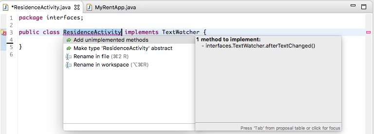
To resolve this error modify ResidenceActivity (manually or using Quick Fix).
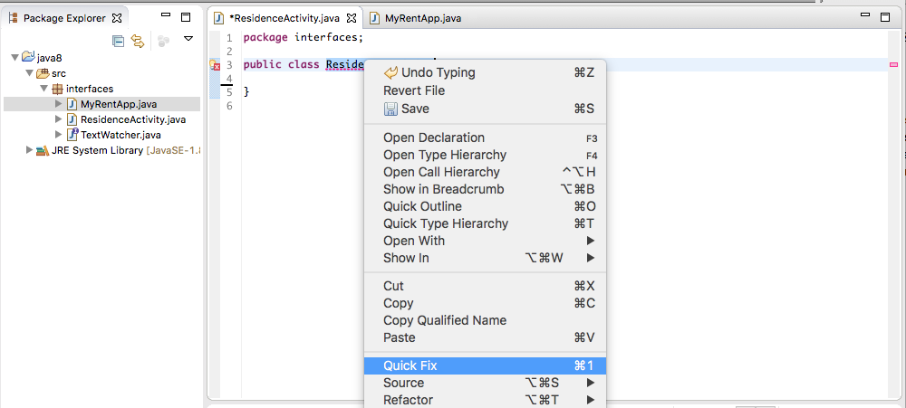
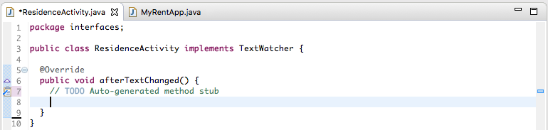
Complete ResidenceActivity by fully implementing the body of afterTextChanged, in this case by adding a simple print statement.
package interfaces;
public class ResidenceActivity implements TextWatcher {
@Override
public void afterTextChanged() {
System.out.println("We're watching you");
}
}Run the app. The output displayed in the console should resemble that shown in Figure 4. 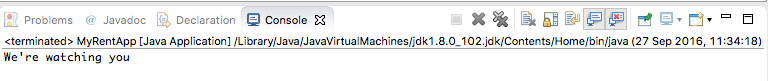
The official documentation defines an interface as follows:
This differs from Java 7 in which the only valid entity in an interface type is one or more abstract method declarations.
We shall provide some simple examples of the implementation of the following:
Introduce a constant value to TextWatcher:
package interfaces;
import java.util.Date;
public interface TextWatcher {
// const declaration
int id = 1;
// abstract method declaration
void afterTextChanged();
}Add this snippet to MyRentApp.main:
// A ResidenceActivity type 'is' a TextWatcher
System.out.println("TextWatcher id: " + activity.id);Build and run the app. The output should resemble that in Figure 1.
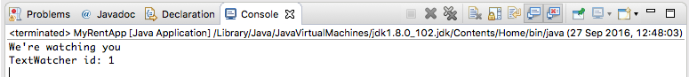
An explanation as to why public abstract and static final may be omitted before variables and static methods in interface definitions is provided in this Stackoverflow article: Despite the fact that this question....
We demonstrate the use of an interface static method as follows:
Add the method definition to the interface.
// static method
static long beforeTextChanged() {
return new Date().getTime();
}Here is the refactored interface:
package interfaces;
import java.util.Date;
public interface TextWatcher {
// const declaration
int id = 1;
// abstract method declaration
void afterTextChanged();
// static method
static long beforeTextChanged() {
return new Date().getTime();
}
}Add a date field in the ResidenceActivity class that implements the interface and initialize this within the activity constructor:
package interfaces;
public class ResidenceActivity implements TextWatcher {
long dateTextChanged;
@Override
public void afterTextChanged() {
System.out.println("We're watching you");
}
public ResidenceActivity() {
dateTextChanged = TextWatcher.beforeTextChanged();
}
}Test by adding this code snippet to MyRentApp.main:
// Date text changed
String date = new Date(activity.dateTextChanged).toString();
System.out.println("Date text changed: " + date);Run the app. The output displayed in the console should resemble that shown in Figure 2. Observe how the static method is invoked: TextWatcher.beforeTextChanged().
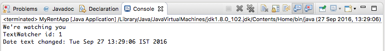
Default interface methods have been provided to facilitate backward compatibility with older Java releases. We have the option of using the default method or overriding it in ResidenceActivity. We shall do both. First we implement and use the default method. Modify TextWatcher to include such a method:
// default method
default void onTextChanged() {
System.out.println("I hate change");
}Test this by adding the following code snippet to MyRentApp.main:
// Test default interface method
activity.onTextChanged();You may be puzzled at why this works. The method onTextChanged is invoked on an object of ResidenceActivity. Yet nowhere in ResidenceAcivity is onTextChanged implemented. The answer is that because ResidenceActivity implements TextWatcher the default TextWatcher methods become available for direct invocation on ResidenceActivity objects.
Build and run the app. Expected output is shown here in Figure 3.
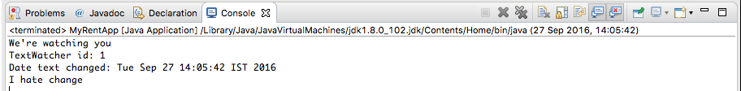
Now, override the default method in ResidenceActivity:
@Override
public void onTextChanged() {
System.out.println("Adapt or die");
}Without making any further changes run the app. Expected output is shown here in Figure 4.
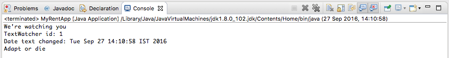
Reference: Java 8 Default Methods Explained in 5 Minutes.
Reference: Default methods and Static methods in interfaces are also discussed on pages 14 - 17 inclusive in Java SE 8 for the Really Impatient by Cay Horstmann (Pearson 2014).
Here is the final TextWatcher, MyRentApp and ResidenceActivity code:
package interfaces;
import java.util.Date;
public interface TextWatcher {
// const declaration
int id = 1;
// static method
static long beforeTextChanged() {
return new Date().getTime();
}
// abstract method
void afterTextChanged();
// default method
default void onTextChanged() {
System.out.println("I hate change");
}
}package interfaces;
public class ResidenceActivity implements TextWatcher {
long dateTextChanged;
@Override
public void afterTextChanged() {
System.out.println("We're watching you");
}
@Override
public void onTextChanged() {
System.out.println("Adapt or die");
}
public ResidenceActivity() {
dateTextChanged = TextWatcher.beforeTextChanged();
}
}package interfaces;
import java.util.Date;
public class MyRentApp {
public static void main(String[] args) {
ResidenceActivity activity = new ResidenceActivity();
activity.afterTextChanged();
// A ResidenceActivity type 'is' a TextWatcher
System.out.println("TextWatcher id: " + activity.id);
// Date text changed
String date = new Date(activity.dateTextChanged).toString();
System.out.println("Date text changed: " + date);
// Test default interface method
activity.onTextChanged();
}
}We shall lead in to demonstrating use of a lambda by first describing an anonymous class and then in the next step introducing functional interfaces. We will then be in a position to replace the anonymous class, the subject of our demo, with a lambda.
Some changes are required to the application as follows:
package interfaces;
public class MyRentApp {
public static void main(String[] args) {
...
}
}
package interfaces;
public class TextView
{
private TextWatcher textwatcher;
public void addTextChangedListener(TextWatcher textwatcher)
{
this.textwatcher = textwatcher;
}
} TextView textView = new TextView();textView.addTextChangedListener();This will generate an error because we have not provided a suitable parameter.
Recall the signature of TextView.addTextChangedListener:
addTextChangedListener(TextWatcher textwatcher)We shall satisfy this parameter requirement with an anonymous class. First we shall implement the class and then describe how it works.
textView.addTextChangedListener(new TextWatcher() {
});void afterTextChanged() has not been implemented. Implement this and the error disappears. textView.addTextChangedListener(new TextWatcher() {
@Override
public void afterTextChanged() {
// TODO Auto-generated method stub
}
}); public ResidenceActivity() {
textView.addTextChangedListener(new TextWatcher() {
@Override
public void afterTextChanged() {
System.out.println("Text changed");
}
});
}What is referred to as anonymous class is highlighted in blue in Figure 1 here. What takes place transparent to the user is that a synthetic class is created and this class implements the TextWatcher interface. An object of the class is then created, a reference to which is passed as a parameter to the method textView.addTextChangedListener. This object satisfies the typing requirement of the parameter, namely TextWatcher.
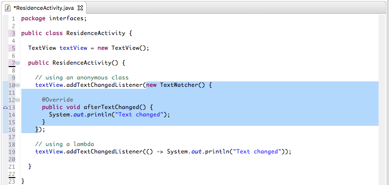
A functional interface is an interface that has just one abstract method, not including methods of the parent Java Object class, default methods or static methods.
Here are four examples of functional interfaces, followed by an example of a non-functional interfaces.
interface Runnable {
void run();
}interface StringCompare {
int compare(String o1, String o2);
}This next interface is also functional because the method equals is a method of the parent Object class and so the interface is considered to possess only 1 abstract method - compare.
interface AnotherStringCompare {
boolean equals(Object obj);
int compare(String o1, String o2);
}Here is the TextWatcher interface we have been working with in the earlier steps in this lab. It has only one abstract method, afterTextChanged, and so qualifies as a functional interface.
import java.util.Date;
public interface TextWatcher {
// const declaration
int id = 1;
// static method
static long beforeTextChanged() {
return new Date().getTime();
}
// abstract method
void afterTextChanged();
// default method
default void onTextChanged() {
System.out.println("I hate change");
}
}The Android TextWatcher interface is an example of a non-functional interface because it has three abstract methods.
public interface TextWatcher {
void afterTextChanged(Editable s);
void beforeTextChanged(CharSequence s, int start, int count, int after);
void onTextChanged(CharSequence s, int start, int before, int count);
}Java language enthusiasts and budding language lawyers may be interested in the complete formal definition which is available here.
A lambda expression could be described as an anonymous function - a block of code that is capable of expressing behaviour, is not associated with any class and that does not have a name.
Figures 1 and 21 illustrate the syntax of lambda expressions.
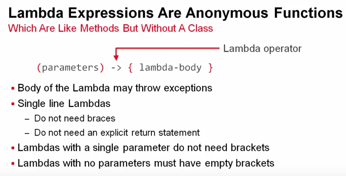
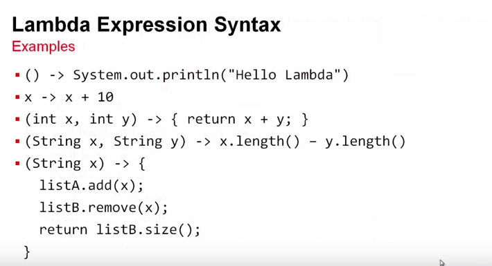
Consider, for example, the third lambda in Figure 2:
(int x, int y) -> {return x + y;}The behaviour of this lambda is equivalent to that of the following method:
int add(int x, int y) {
return x + y;
}A lambda expression becomes a valid parameter to a method where an object of a class that implements an interface with a single abstract method is expected. Such an interface is referred to as a functional interface as explained in an earlier step. We have already encountered an example of in practice. Here, again, is the signature of the TextView method to add a listener:
addTextChangedListener(TextWatcher textwatcher)The formal parameter is TextWatcher textwatcher. Thus an object of a class that implements the TextWatcher interface satisfies the parameter type requirement. And so in this situation we may apply a lambda. This is illustrated in Figure 3 below.
Here is the completed ResidenceActivity in which the anonymous class is replaced by a lambda.
package interfaces;
public class ResidenceActivity {
TextView textView = new TextView();
public ResidenceActivity() {
textView.addTextChangedListener(() -> System.out.println("Text changed"));
}
}Compare the above to the following in which an anonymous class is used:
package interfaces;
public class ResidenceActivity {
TextView textView = new TextView();
public ResidenceActivity() {
textView.addTextChangedListener(new TextWatcher() {
@Override
public void afterTextChanged() {
System.out.println("Text changed");
}
});
}
}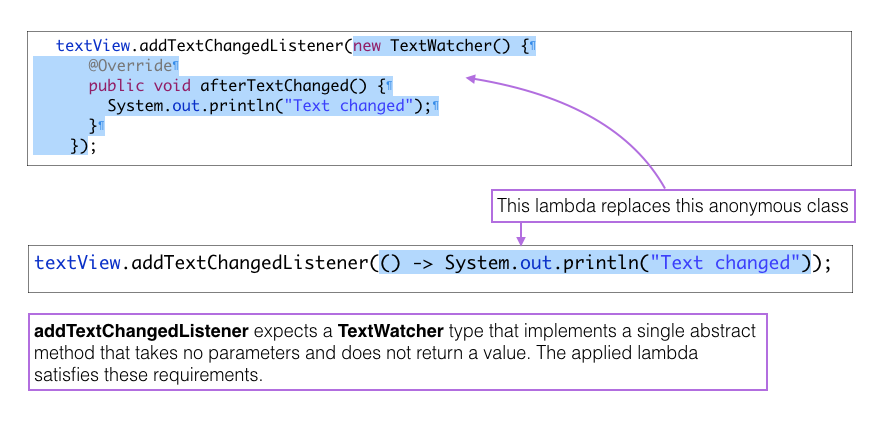
Experiment by adding a second abstract method to TextWatcher. In doing so, TextWatcher ceases to be a functional interface.
void onBeforeTextChanged();Observe an error is now generated in ResidenceActivity. This is caused by an attempt to convert a non-functional interface to a lambda expression. See Figure 4.
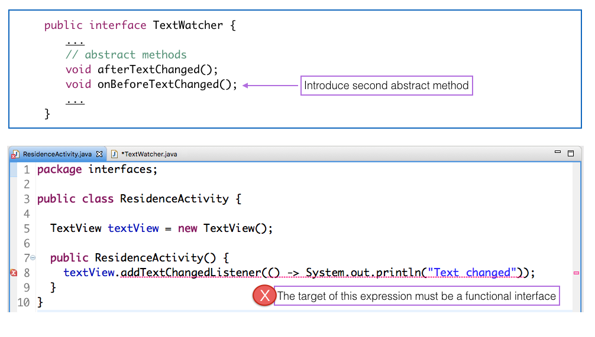
1 JDK 8 Lambdas MOOC Course. Oracle. Simon Ritter. See Lesson 1-2.
We are presently developing our Android apps in a Java 7 environment with targetSdkVersion set to 23 (Nougat). Nougat, released in August 2016, introduces a new experimental tool chain called Jack and Jill that provides support for a subset of Java 8 features.
There is, however, a plugin called Retrolambda that provides a backport of lambda syntax to our environment - Java 7 and version 23. We shall use this in this lab rather the Jack compiler to test the use of lambdas. We can use Jack and Jill later (this lab will demonstrate using plugins in Gradle as well as lambdas).
Here we shall configure both gradle files to import the retrolamda plugin.
Use your solution to MyRent-05 (or you can use ours located at myrent-05
Open the top-level build.gradle file (Project: MyRent).
In the buildscript block add the following snippets in the locations shown:
buildscript {
repositories {
maven {
url "https://plugins.gradle.org/m2/"
}
...
...
}
dependencies {
...
classpath 'me.tatarka:gradle-retrolambda:3.3.0'
...
}
}Here is the complete top level file:
// Top-level build file where you can add configuration options common to all sub-projects/modules.
buildscript {
repositories {
jcenter()
maven {
url "https://plugins.gradle.org/m2/"
}
}
dependencies {
classpath 'com.android.tools.build:gradle:2.3.2'
classpath 'me.tatarka:gradle-retrolambda:3.3.0'
// NOTE: Do not place your application dependencies here; they belong
// in the individual module build.gradle files
}
}
allprojects {
repositories {
jcenter()
}
}
task clean(type: Delete) {
delete rootProject.buildDir
}In the module build.gradle file add the following snippets:
At the head of the file:
apply plugin: 'me.tatarka.retrolambda'At the end of the android block, before its closing brace:
compileOptions {
sourceCompatibility JavaVersion.VERSION_1_8
targetCompatibility JavaVersion.VERSION_1_8
}Here is the complete file:
apply plugin: 'com.android.application'
apply plugin: 'me.tatarka.retrolambda'
android {
compileSdkVersion 25
buildToolsVersion "25.0.3"
defaultConfig {
applicationId "org.wit.myrent"
minSdkVersion 19
targetSdkVersion 25
versionCode 1
versionName "1.0"
testInstrumentationRunner "android.support.test.runner.AndroidJUnitRunner"
}
buildTypes {
release {
minifyEnabled false
proguardFiles getDefaultProguardFile('proguard-android.txt'), 'proguard-rules.pro'
}
}
compileOptions {
sourceCompatibility JavaVersion.VERSION_1_8
targetCompatibility JavaVersion.VERSION_1_8
}
}
dependencies {
compile fileTree(dir: 'libs', include: ['*.jar'])
androidTestCompile('com.android.support.test.espresso:espresso-core:2.2.2', {
exclude group: 'com.android.support', module: 'support-annotations'
})
compile 'com.android.support:appcompat-v7:25.3.1'
compile 'com.android.support.constraint:constraint-layout:1.0.2'
testCompile 'junit:junit:4.12'
}Open ResidenceActivity.java in Android Studio.
We shall confine ourselves to refactoring the check box code only. Presently the listener associated with this widget is set using the interface or delegated method. We will change this to the use of an anonymous class and then convert the anonymous class to a lambda expression.
CompoundButton.OnCheckedChangeListener from the class header. This now becomes:public class ResidenceActivity extends AppCompatActivity implements TextWatcher,
View.OnClickListener,
DatePickerDialog.OnDateSetListenerReplace rented.setOnCheckedChangeListener(this); so as to use an anonymous inner class:
rented.setOnCheckedChangeListener(new CompoundButton.OnCheckedChangeListener() {
@Override
public void onCheckedChanged(CompoundButton buttonView, boolean isChecked) {
residence.rented = isChecked;
}
});Toggle the code folding icon (+|-) immediately to the left of the line of code beginning rented.set.... Observe the folding feature. This is available if the appropriate setting is enabled in the Android Studio Preferences (Figures 1 & 2).
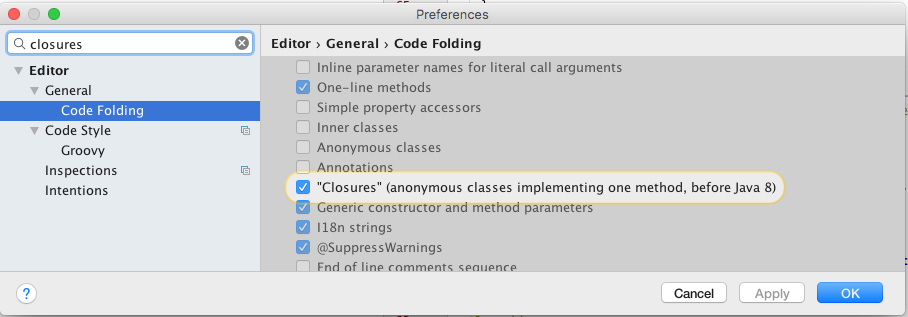
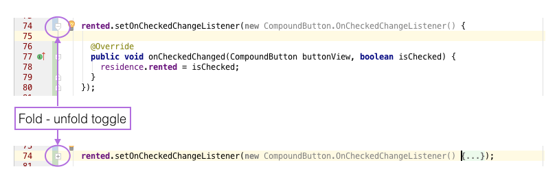
We are allowed to convert this inner anonymous class to a lambda expression because the OnCheckedChangedListener interface contains a single abstract method and thus qualifies as a functional interface. This method, onCheckedChanged, has 2 parameters - a CompoundButton and a boolean. The lambda expression can infer these types and so it is not necessary to explicitly specify them. Here is the replacement lambda:
rented.setOnCheckedChangeListener((button, isChecked) -> residence.rented = isChecked);Test the app by created both a checked and unchecked residence, closing the app, reopening and ensuring the check box state is correctly represented.
To summarize, three approaches to setting a listener are illustrated in Figure 3.
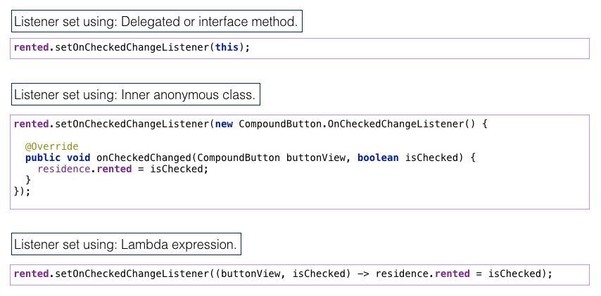
Add, commit and push this change to your remote repo.